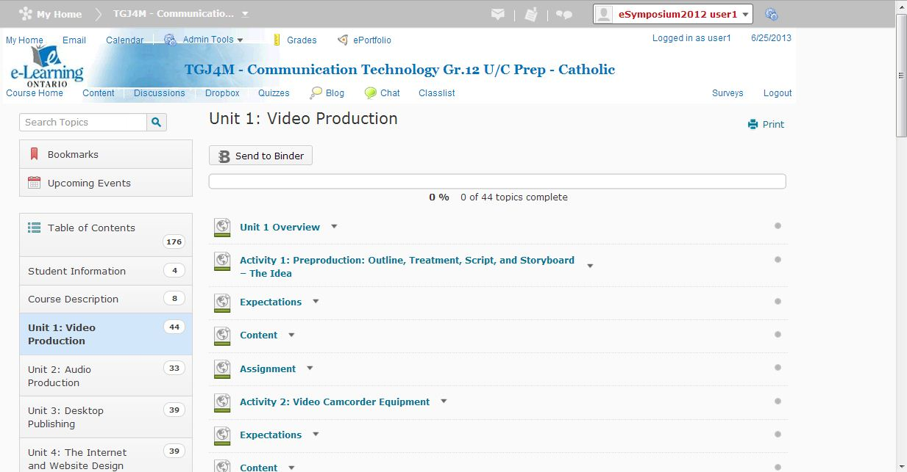

Unit 1: Student Orientation Course
Activity 1: Home Page versus Course Home
Content
|
Welcome to e-Learning! Consider this your personal guide to e-Learning. This guide will walk you through a typical course and introduce you to all the great tools you will have access to while you are here. Feel free to come back here at any time if you can't remember how to do something. |
Quick Access Guide
In this
My Home, Navigation Minibar, Course Home, Nav Bar, News, Calendar, Content, Accessing Help, Your Locker and Meet the Teacher
You will learn best by doing, so don't get discouraged and don't be afraid to try things.
|
My Home versus Course Home The first place you will land when you log on to your school's homepage is called My Home. Here you'll find links to your course or courses. There will also be a News section where the school administrator will post information about the school as well as important dates or messages for students. |
After logging in, you will be at your TDSB “My Home” page where you'll find links to all of your courses,

The MiniBar
The MiniBar is the thin white strip that is always visible at the very top of each D2L page. On the Minibar you will find links to My Home, the Select a Course drop-down menu, Alerts, Your profile, and Account settings.
Directly below the MiniBar, you will find a My Tools menu (email, calendar, locker, Portfolio, blog)
 |
Take a quick tour of some of the features of My Home Page. Here is transcript (.rtf) of the above presentation. |
|---|
|
Each Course Home page is framed around a Navigation Bar or Nav Bar which is below the MiniBar. The Nav Bar is customizable by your teacher and you will have access to many tools for your course. You will likely find links to the Content, Discussions Your teacher will put links in the Nav Bar to all the tools that they think you will need.
|
 |
|---|
|
|---|
The Locker is your virtual locker. If you're working on a file and would like to save it so that you can access it from any computer, upload it to the locker. This is a great tool to use when you would like to access a file from home using your home computer.
Content
|
You're probably anxious to know what the course is all about - so the first place you will likely want to visit is the content section. This is where the actual course (including your assignments) is stored. Select Content from the Nav Bar or Content Browser from the Course Home Page. Your course is organized with a Table of Contents where you will see the Course Units and Activities. On the |
|  |
|
On the right, you will see your course content broken down
|
Need Help? Take the tour!
|
Tour this content page and see what a typical course looks like. Here is a transcript (.rtf) of the above presentation. |
|---|
 |
You may not have a teacher standing at the front of your classroom but help (and your teacher) are literally a "click" away.Check out the Meet the Teacher Page to find out more about your teacher, office hours, contact information. Your teacher may even have uploaded pictures… |
|---|